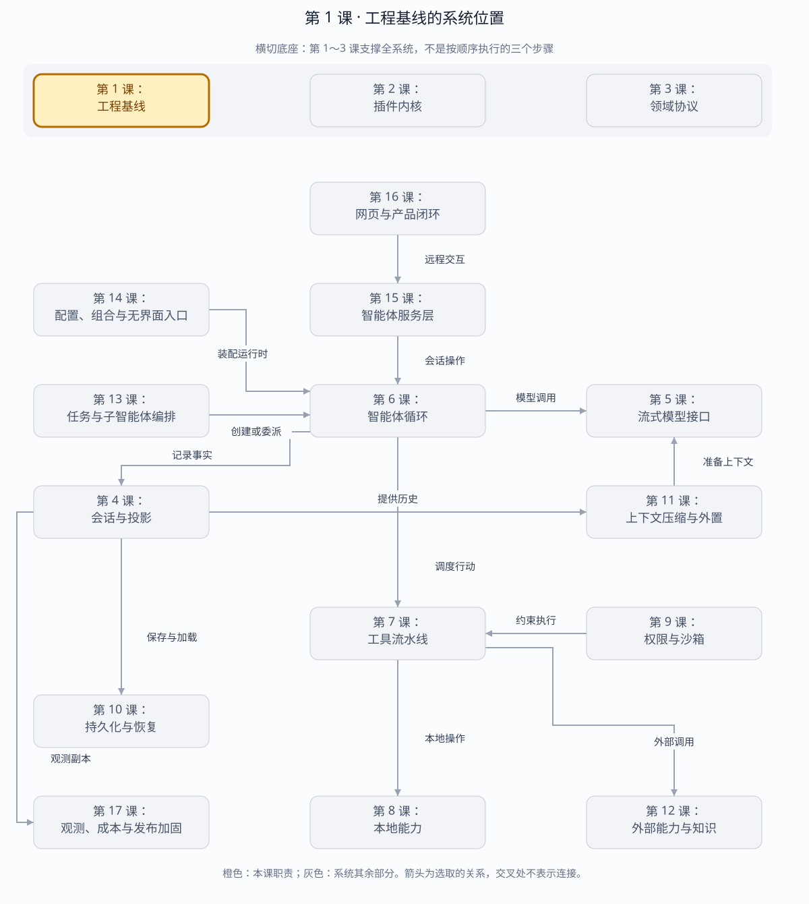

第 1 课：先证明环境可调试
本课只建立“代码能运行、测试能失败、断点能停住”三个事实。暂时不接入 LLM，也不引入 Cordis。
章节概览（可选）：三框架职责摘要
本章对比：DeepSeek Harness / DeepAgents / OpenHands
口径：DeepSeek 依据本地原仓库（99f6f02fecdb），不是 harness-lab；deepagent 按 LangChain DeepAgents 理解；OpenHands 对比当前 Software Agent SDK，不混用旧 V0。在线资料核对于 2026-08-28，描述文档能力，不代表已在本实验室安装或测试。没有依据的同名能力不强行等同。
三者的关键区别：三者首先要对齐比较层级：原仓库工程、可嵌入库、产品部署不能用同一个“启动成功”标准验收。（基于上述依据的归纳）
本章在全系统中的位置
全系统的构建与验证底座，不是一次模型请求中的运行阶段。
下面是本课程的概念地图，不是某框架的逐包调用图，也不表示实验室已默认装配全部能力。三套框架的实际对应关系见上方横向对比表。
全系统定位 · 橙色高亮第 1 课
打开大图 · Mermaid 图源
| 上游与输入 | 开发者修改源码、依赖和配置。 |
|---|
| 下游与输出 | 可启动、可测试、可复现的运行产物，供第 2 课插件内核和后续所有模块使用。 |
|---|
| 不归本章负责 | 不负责模型推理、工具执行或会话恢复。 |
|---|
| 放进具体场景 | 刚拉下仓库先跑一个不依赖真实模型的检查，确认失败来自代码还是环境；再进入插件与协议开发。 |
|---|
接着看下方「可视化图解」：局部模块图解释职责，时序图解释一次调用，分支图解释异常与边界。
本课导览
| 包含内容 | Bun 与 TypeScript 环境、最小程序、自动测试、VS Code 断点调试。 |
|---|
| 涉及模块 | package.json、tsconfig.json、基线源码与测试、VS Code 调试配置。 |
|---|
| 白话解释 | 先把实验台搭稳：代码确实能跑，写错时测试确实会红，需要观察时断点确实能停。 |
|---|
| 解决的问题 | 排除环境和工具链噪声，避免后续把安装、编译或调试问题误判成 Harness 设计问题。 |
|---|
点击下面的概念名称，可直达该概念的三框架实现、区别与依据。原有能力清单、示例和验收描述面向 harness-lab 教学实现；不要将其直接当作上游框架能力声明。
完整能力清单
| 能力 | 具体覆盖 | 完成标志 |
|---|
| 运行基线 | Bun 运行 TypeScript 源码，入口能够稳定退出并返回正确退出码。 | 示例输出可重复。 |
| 类型基线 | 严格类型检查覆盖源码与测试，类型错误在运行前暴露。 | tsc 无错误。 |
| 测试基线 | 测试可通过，也能通过故意修改断言证明失败路径有效。 | bun:test 能红能绿。 |
| 调试基线 | VS Code 可启动目标、命中源码断点并检查局部变量与调用栈。 | 按 F5 能停在断点。 |
主概念深挖：可调试基线
可调试基线位于所有 Harness 能力的最上游：上游输入是源码、配置和工具链，下游是后续 16 课的所有运行能力；它不提供业务功能，却决定后面每次失败能否被可靠复现和定位。
源码与配置（输入）
│ Bun 加载 + TypeScript 检查
▼
可运行程序 ──► bun:test 验证 ──► VS Code 断点观察
│ │
└──────── 退出码、日志、调用栈（输出）
| 背景与目的 | 复杂系统里“环境坏了”和“代码坏了”症状相似；先建立可重复的运行、类型、测试和断点链路，后续调试才有可信起点。 |
|---|
| 输入与输出 | 输入是源码、编译配置、依赖和测试；输出是程序结果、类型诊断、测试报告、退出码及断点状态。 |
|---|
| 适用场景 | 首次搭建仓库、升级 Bun 或 TypeScript、迁移机器、CI 与本地结果不一致时。 |
|---|
| 底层组件 | Bun 运行时与测试器、TypeScript 编译器、源码映射、VS Code 调试适配器。 |
|---|
| 核心逻辑 | 先运行最小入口，再制造一个确定失败的断言，最后在同一源码上命中断点；三条证据共同排除“假绿”和映射错误。 |
|---|
| 权衡 | 基线阶段刻意不接模型和插件，牺牲功能演示速度，换取问题空间最小和后续回归可信。 |
|---|
| 方案对比 | 直接运行完整应用反馈丰富但变量太多；最小垂直基线信息少，却能最快区分工具链故障与业务故障。 |
|---|
场景穷举
开始验证
├─ 运行成功、测试通过、断点命中 → 基线成立
├─ 运行失败、类型检查失败 → 先修工具链或源码
├─ 测试永远通过 → 反向制造失败，排查假测试
├─ 断点不命中 → 检查启动目标与源码映射
└─ 本地通过、CI 失败 → 对齐版本、环境和工作目录
| 场景 | 观察 | 处理 |
|---|
| 正常 | 入口、类型检查、测试和断点四条链路全部成功。 | 冻结版本与命令，作为后续课程共同入口。 |
| 边界 | 空输入、最小文件或无依赖时仍能启动和退出。 | 保留最小夹具，避免把业务数据当作工具链前提。 |
| 失败 | 编译错误、断言错误或非零退出能被明确报告。 | 确认失败发生在哪一层，不用后续模块掩盖根因。 |
| 恢复 | 重装依赖或换机器后结果漂移。 | 按锁文件、运行时版本、配置、工作目录顺序恢复。 |
| 误用 | 只运行一次 Hello 就宣称环境可靠。 | 必须反向证明测试能失败、断点能观察真实源码。 |
多方案对比
| 方案 | 优势 | 代价 | 何时选择 |
|---|
| 只跑完整应用 | 最接近最终体验。 | 依赖和变量过多，失败定位困难。 | 基线已稳定后的端到端验收。 |
| 只做静态检查 | 快、确定、适合 CI。 | 不能证明运行时、I/O 和调试器有效。 | 提交前快速门禁。 |
| 运行+类型+测试+断点 | 证据互补，能定位层次。 | 初始配置稍多。 | 新仓库和教学实验的推荐基线。 |
关键设计反问
- 为什么“测试通过”还不够？
- 测试可能根本没有运行目标代码，或断言永远为真；必须故意制造失败证明测试链路有辨别力。
- 为什么第一课就需要断点？
- 后续大量问题涉及事件顺序和竞态，只看最终输出无法判断中间状态；调试能力必须先于复杂状态机。
- 能否直接用系统全局 Bun？
- 可以，但必须固定并打印版本；否则机器或 CI 升级后出现的行为变化无法和代码变化区分。
当前基线
| Bun | 1.3.14，同时承担运行时、包管理器、测试器和调试入口 |
|---|
| TypeScript | 5.9.3，由 bun x tsc 执行严格类型检查 |
|---|
| 依赖 | 只有 TypeScript 与 Bun 类型声明两个开发依赖，无运行时三方包 |
|---|
| 构建产物 | Bun 运行源码；发布时生成 JS、声明文件与 source map |
|---|
运行基线：三框架分别怎么做？
同一个问题：同样启动一个 agent，运行环境如何不同？
这个概念的区别：复现基线应锁定各自环境，不能把实验室 Bun 版本当作三套框架的共同运行要求。
类型基线：三框架分别怎么做？
同一个问题：错误在哪个类型检查边界被发现？
这个概念的区别：静态检查与运行时验证分开验收；一个类型检查器通过不代表网络输入可信。
测试基线：三框架分别怎么做？
同一个问题：最小测试究竟由哪个执行器运行？
这个概念的区别：先证明目标测试确实被选中，再比较结果；尤其不要把被默认排除的测试算作通过。
调试基线：三框架分别怎么做？
同一个问题：断点应跟随哪个进程和源码入口？
这个概念的区别：VS Code 是调试界面，不是共同运行时；附着错进程会出现“请求成功但断点不命中”。
练习
- 进入
harness-lab。
- 运行
bun install。
- 运行
bun run typecheck，证明严格类型检查通过。
- 选择一个最小测试，用
bun test src/context.test.ts 执行。
- 使用下面的命令启动断点调试，并在测试源码第一行设置断点。
cd harness-lab
bun install
bun run typecheck
# Bun Inspector 启动后先停在入口；单并发让断点顺序稳定
VS Code F5 → 01 · 插件内核
边界说明：deepseek-harness/ 子模块只是权威实现参考；从零实验本体是 harness-lab/，它的安装、运行、测试、调试和发布入口全部使用 Bun。
验收
- ✓
bun --version 符合项目约束。
- ✓ TypeScript 检查退出码为 0。
- ✓ Bun test runner 能执行一个指定测试文件。
- ✓ 调试器能在测试源码断点停住，并查看局部变量。
本机验证结果
bun run typecheck
# exit 0；harness-lab strict TypeScript 全部通过
bun test src/context.test.ts
# 5 pass / 0 fail
检索练习：不看路线表，回答“为什么 OTel Logs 不能作为 Session 恢复源？”答案应同时提到完整性、异步导出和权威事件日志。
一手参考
阅读仓库的 开发指南中“首次设置”和“TypeScript 项目布局”两节。遇到任何命令或断点问题，直接继续问我。
返回完整路线 →